화공기사(구) (2018-09-15 기출문제)
1과목: 화공열역학
1. 실제가스에 관한 설명 중 틀린 것은?
- 압축인자는 항상 1보다 작거나 같다.
- 혼합가스의 2차 비리얼 (virial)계수는 온도와 조성의 함수이다.
- 압력이 영(zero)에 접근하면 잔류 (residual)엔탈피나 엔트로피가 영(zero)으로 접근한다.
- 조성이 주어지면 혼합물의 임계치 (Tc, Pc, Zc)는 일정하다.
(정답률: 58%)

2. 일반적인 삼차 상태방정식 (Cubic Equation of State) 의 매개변수를 구하기 위한 조건을 옳게 표시한 것은?(오류 신고가 접수된 문제입니다. 반드시 정답과 해설을 확인하시기 바랍니다.)
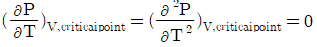
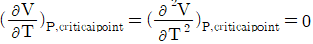
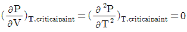
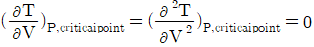
(정답률: 43%)
3. 액상반응의 평형상수를 옳게 나타낸 것은?(단, vi: 성분 i 의 양론수 양론수 (stoichiometric number), xi: 성분 i 의 액상 몰분률 몰분률 , yi : 성 분 i 의 기상 몰분률 ,
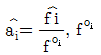
: 표준상태에서의 순수한 액체 i의 퓨개시티,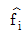
: 순수한 액체 i 의 퓨개 시티 이다.)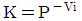
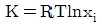
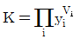
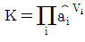
(정답률: 63%)
4. 기-액상에서 두 성분이 한가지의 독립된 반응을 하고 있다면, 이 계의 자유도는?
- 0
- 1
- 2
- 3
(정답률: 68%)
5. 다음 중 일의 단위가 아닌 것은?
- N·m
- Watt·s
- L·atm
- cal/s
(정답률: 65%)
6. 다음 중 에너지의 출입은 가능하나 물질의 출입은 불가능한 계는?
- 열린계 (Open system)
- 닫힌계 (Closed system)
- 고립계 (Isolated system)
- 가역계 (Reversible system)
(정답률: 79%)
7. 다음과 같은 반데르발스(van der Waals) 식을 이용하여 실제 기체의  를 구한 결과로서 옳은 것은?
를 구한 결과로서 옳은 것은?
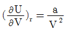
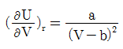
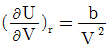
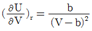
(정답률: 73%)
8. 다음의 반응에서 반응물과 생성물이 평형을 이루고 있다. 평형이동에 미치는 온도와 압력의 영향을 살펴보기 위해서, 온도를 올려보고 압력을 상승시키는 변화를 주었을 때 평형은 두 경우에 각각 어떻게 이동하겠는가? (단, 정반응이 흡열반응이다.)
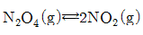
표준반응 엔탈피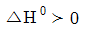
- 온도 상승 : 오른쪽, 압력상승 : 오른쪽
- 온도 상승 : 오른쪽, 압력상승 : 왼쪽
- 온도 상승 : 왼쪽, 압력상승 : 오른쪽
- 온도 상승 : 왼쪽, 압력상승 : 왼쪽
(정답률: 67%)
9. 열역학 모델을 이용하여 상평형 계산을 수행하려고 할 때 응용 계에 대한 모델의 조합이 적합하지 않은 것은?
- 물 속의 이산화탄소의 용해도 : 헨리의 법칙
- 메탄과 에탄의 고압 기·액 상평형 : SRK(Soave/Redlich/Kwong) 상태방정식
- 에탄올과 이산화탄소의 고압 기·액 상평형 : WILSON 식
- 메탄올과 헥산의 저압 기·액 상평형 : NRTL(Non-Random-Two-Liquid)식
(정답률: 57%)
10. 공기표준디젤사이클의 P-V 선도에 해당하는 것은?
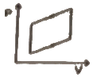
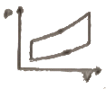
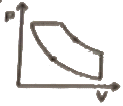
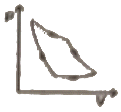
(정답률: 73%)
11. 일정압력(3kgf/cm2)dp에서 0.5m3의 기체를 팽창시켜 24000kgf·m의 일을 얻으려 한다. 기체의 체적을 얼마로 팽창해야 하는가?
- 0.6m3
- 1.0m3
- 1.3m3
- 1.5m3
(정답률: 67%)
12. 평형상태에 대한 설명 중 옳은 것은?
- (dGt)t,p ＞0 가 성립한다.
- (dGt)t,p ＜0가 성립한다.
- (dGt)t,p =1이 성립한다.
- (dGt)t,p =0이 성립한다.
(정답률: 78%)
13. 1atm, 357℃의 이상기체 1mol을 10atm으로 등온압축하였을 때의 엔트로피 변화량은 약 얼마인가?(단, 기체는 단원자분자이며, 기체상수 R=1.987cal/mol·K이다.)
- -4.6cal/mol·K
- 4.6cal/mol·K
- -0.46cal/mol·K
- 0.46cal/mol·K
(정답률: 56%)
14. 500K의 열저장소(Heat Reservoir)로부터 300K의 열저장소로 열이 이동된다. 이동된 열의 양이 100kJ이라고 할 때 전체 엔트로피 변화량은 얼마인가?
- 50.0kJ/K
- 13.3kJ/K
- 0.500kJ/K
- 0.133kJ/K
(정답률: 33%)
15. GE가 다음과 같이 표시된다면 활동도계수는? (단, GE는 과잉 깁스에너지, B, C는 상수, γ 는 활동도계수, X1, X2 : 액상 성분 1, 2의 GE/RT=BX1X2+C
- lnγ1=BX22
- lnγ1=BX22+C
- lnγ1=BX12+C
- lnγ1=BX12
(정답률: 54%)
16. 이상기체의 단열가역 변화에 대하여 옳은 것은?(단, γ=Cp/Cv 이다.)
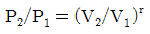
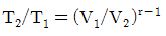
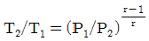
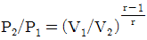
(정답률: 57%)
17. 열역학 제3법칙은 무엇을 의미하는가?
- 절대 0도에 대한 정의
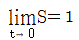
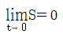
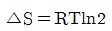
(정답률: 64%)
18. 2atm 의 일정한 외압 조건에 있는 1mol 의 이상기체 온도를 10K 만큼 상승시켰다면 이상기체가 외계에 대하여 한 최대 일의 크기는 몇 cal 인가?(단, 기체상수 R=1.987cal/mol·K이다.)
- 14.90
- 19.87
- 39.74
- 43.35
(정답률: 63%)
19. 1 mole의 이상기체(단원자 분자)가 1기압 0℃에서 10기압으로 가역압축 되었다. 다음 압축 공정 중 압축 후의 온도가 높은 순으로 배열된 것은?
- 등온 > 정용 > 단열
- 정용 > 단열 > 등온
- 단열 > 정용 > 등온
- 단열 = 정용 > 등온
(정답률: 58%)
20. 그림과 같은 공기표준 오토사이클의 효율을 옳게 나타낸 식은? (단, a는 압축비이고 r은 비열비(Cp/Cv)이다.)
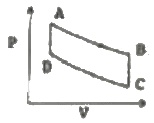
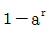
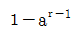
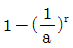
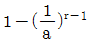
(정답률: 72%)
2과목: 단위조작 및 화학공업양론
21. 물질의 물질의 증발잠열 증발잠열 (Heat of vaporization)을 예측하는데 예측하는데 사용되는 사용되는 식은?
- Raoult의 식
- Fick의 식
- Clausius-Clapeyron의 식
- Fourier의 식
(정답률: 70%)
22. 0℃, 800atm에서 O2의 압축계수는 1.5이 다. 이 상태에서 산소의 밀도 (g/L)는 약 얼마인 얼마인 가?
- 632
- 762
- 827
- 1,715
(정답률: 54%)
23. 밀도 1.15g/cm3 인 액체가 밑면의 넓이 930 cm2, 높이 0.75m 인 원통 속에 가득 들어있다. 이 액체의 질량은 약 몇 kg 인가?
- 8.0
- 80.1
- 186.2
- 862.5
(정답률: 70%)
24. 1mol의 NH3를 다음과 같은 반응에서 산화시킬 때 O2 를 50% 과잉 사용하였다. 만일 반응의 완결도가 90%라 하면 남아있는 산소는 몇 mol 인가?
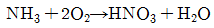
- 0.6
- 0.8
- 1.0
- 1.2
(정답률: 58%)
25. 이상기체의 정압열용량 (Cp)과 정용열용량 (Cv)에 대한 설명 중 틀린 것은?
- Cv가 Cp보다 기체상수 (R) 만큼 작다.
- 정용계를 가열시키는데 열량이 정압계보다 더 많이 소요된다.
- Cp 는 보통 개방계의 열출입을 결정하는 물리량이다.
- Cv 는 보통 폐쇄계의 열출입을 결정하는 물리량이다.
(정답률: 63%)
26. 이상기체법칙이 적용된다고 가정할 경우 용적이 5.5m3인 용기에 질소 28kg을 넣고 가 열하여 압력이 10atm 이 될 때 도달하는 기체의 온도 (℃)는?
- 81.51
- 176.31
- 287.31
- 397.31
(정답률: 65%)
27. 760mmHg 대기압에서 진공계가 100mmHg 진공을 표시하였다. 절대압력은 몇 atm 인가?
- 0.54
- 0.69
- 0.87
- 0.96
(정답률: 70%)
28. 실제기체의 압축 인자 (compressibility factor)를 나타내는 그림이다. 이들 기체 중에 서 저온에서 분자간 인력이 가장 큰 기체는?
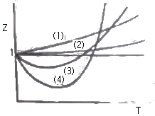
- (1)
- (2)
- (3)
- (4)
(정답률: 62%)
29. 25℃에서 벤젠이 bomb 열량계 속에서 연소되어 이산화탄소와 물이 될 때 방출된 열량 을 실험으로 재어보니 벤젠 1mol 당 780890cal 이었다. 25℃에서의 벤젠의 표준연소열은 약 몇 cal 인가?(단, 반응식은 다음과 같으며 이상기체로 가정 한다.)
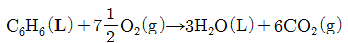
- -781778
- -781588
- -781201
- -780003
(정답률: 40%)
30. 25℃, 대기압하에서 0.38mH2O의 수두압 으로 포화된 습윤공기 100 m3이 있다. 이 공기 중의 수증기량은 약 몇 kg 인가?(단, 대기압은 755mmHg 이고, 1기압은 수두로 10.3mH2O 이다.)
- 2.71
- 12.2
- 24.7
- 37.1
(정답률: 35%)
31. 다음 중 디스크의 형상을 원뿔모양으로 바꾸어서 유체가 통과하는 단면이 극히 작은 구 조로 되어 있기 때문에 고압 소유량의 유체를 누설 없이 조절할 목적에 사용하는 것은?
- 콕밸브 (cock valve)
- 첵벨브 (check valve)
- 게이트밸브 (gate valve)
- 니들밸브 (needle valve)
(정답률: 53%)
32. 단일효용증발기에서 10wt% 수용액을 50wt% 수용액으로 농축한다. 공급용액은 55000kg/h, 증발기에서 용액의 비점이 52℃이고, 공급용액의 온도 52℃일 때 증발된 물 의 양은?
- 11000kg/h
- 22000 kg/h
- 44000kg/h
- 55000kg/h
(정답률: 63%)
33. 비중이 1 인 물이 흐르고 있는 관의 양단 에 비중이 13.6인 수은으로 구성된 U자형 마 노미터를 설치하여 수은의 높이차를 측정해보니 약 33cm 이었다. 관 양단의 압력차는 압력차는 약 몇 atm 인가?
- 0.2
- 0.4
- 0.6
- 0.8
(정답률: 62%)
34. 교반기 중 점도가 점도가 높은 액체의 경우에는 적합하지 않으나 점도가 낮은 액체의 다량 처리에 많이 사용되는 것은?
- 프로펠러(propeller)형 교반기
- 리본(ribbon)형 교반기
- 앵커(anchor)형 교반기
- 나선형(screw)형 교반기
(정답률: 65%)
35. 매우 넓은 2개의 평행한 회색체 평면이 있다. 평면 1과 2의 복사율은 각각 0.8 , 0.6, 이고 온도는 각각 1000K, 600K이다. 평면 1에서 2까 지의 순복사량은 얼마인가 얼마인가?(단, Stefan-Boltzman 상수는 5.67×10^(-8) W/m2·K^4이다.)
- 12874W/m2
- 25749W/m2
- 33665W/m2
- 47871W/m2
(정답률: 32%)
36. 분배의 법칙이 성립하는 성립하는 영역은 어떤 경우 인가?
- 결합력이 결합력이 상당히 큰 경우
- 용액의 농도가 묽을 경우
- 용질의 분자량이 분자량이 큰 경우
- 화학적으로 화학적으로 반응할 반응할 경우
(정답률: 64%)
37. 가로 30cm, 세로 60cm 인 직사각형 단면 을 갖는 도관에 세로 35cm 까지 액체가 차서 흐르고 있다. 상당직경 (equivalent diameter)은 얼마인가?
- 62cm
- 52cm
- 42cm
- 32cm
(정답률: 43%)
38. 증류탑의 ideal stage(이상단 )에 대한 설명 으로 옳지 않은 것은?
- stage(단)를 떠나는 두 stream(흐름)은 서로 평형 관계를 이루고 이루고 있다.
- 재비기 (Reboiler)는 한 ideal stage로 계산 한다.
- 부분응축기(partial condenser)는 한 ideal stage로 계산한다.
- 전응축기(Total condenser)는 한 ideal stage로 계산한다.
(정답률: 42%)
39. 다음 그림과 같은 건조속도 곡선 (X는 자유 수분 , R은 건조속도)을 나타내는 고체는? (단, 건조는 A→B→C→D 순서로 일어난다.)(문제 복원 오류로 그림파일이 없습니다. 정학한 그림 내용을 아시는분 께서는 관리자 메일로 보내주시면 감사하겠습니다. 정답은 4번 입니다.)
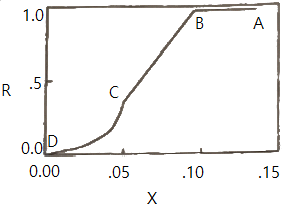
- 비누
- 소성점토 소성점토
- 목재
- 다공성 촉 매입자
(정답률: 61%)
40. 탑내에서 기체속도를 점차 증가시키면 탑 내 액정체량 (hold up)이 증가함과 동시에 압력 손실도 급격히 증가하여 액체가 아래로 이동하는 것을 방해할 때의 속도를 무엇이라고 하는가?
- 평균속도
- 부하속도
- 초기속도
- 왕일속도
(정답률: 73%)
3과목: 공정제어
41. 다음 중 제어밸브를 나타낸 것은?
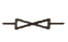
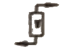
(정답률: 71%)
42. 선형계의 제어시스템의 안정성을 판별하는 방법이 아닌 것은?
- Routh-Hurwitz 시험법 적용
- 특성방정식 근궤적 그리기
- Bode 나 Nyquist 선도 그리기
- Laplace 변환 적용
(정답률: 67%)
43. PID 제어기의 전달함수의 형태로 옳은 것은?(단, KC는 비례이득, τl는 적분시간상수, τD는 미분시간상수를 나타낸다.)
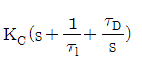
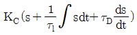
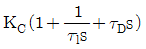
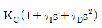
(정답률: 67%)
44. 적분공정(G(s)=1/s)을 제어하는 경우에 대한 설명으로 틀린 것은?
- 비례제어만으로 설정값의 계단변화에 대한 잔류오차(offset)를 제거할 수 있다.
- 비례제어만으로 입력외란의 계단변화에 대한 잔류오차(offset)를 제거할 수 있다.(입력외란은 공정입력과 같은 지점으로 유입되는 외란)
- 비례제어만으로 출력외란의 계단변화에 대한 잔류오차(offset)를 제거할 수 있다.(출력외란은 공정출력과 같은 지점으로 유입되는 외란)
- 비례-적분제어를 수행하면 직선적으로 상승하는 설정값 변화에 대한 잔류오차(offset)를 제거할 수 있다.
(정답률: 47%)
45. 다음 공정과 제어기를 고려할 때 정상상태(steady-state) 에서 y(t) 값은 얼마인가? (제어기 :
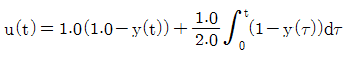
, 공정 :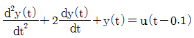
)- 1
- 2
- 3
- 4
(정답률: 34%)
46. 제어 결과로 항상 cycling 이 나타나는 제어기는?
- 비례 제어기
- 비례-미분 제어기
- 비례-적분 제어기
- on-off 제어기
(정답률: 60%)
47. 연속 입출력 흐름과 내부 가열기가 있는 저장조의 온도제어 방법 중 공정제어 개념이라고 볼 수 없는 것은?
- 유입되는 흐름의 유량을 측정하여 저장조의 가열량을 조절한다.
- 유입되는 흐름의 온도를 측정하여 저장조의 가열량을 조절한다.
- 유출되는 흐름의 온도를 측정하여 저장조의 가열량을 조절한다.
- 저장조의 크기를 증가시켜 유입되는 흐름의 온도 영향을 줄인다.
(정답률: 63%)
48. 1차계의 시상수 τ에 대하여 잘못 설명한 것은?
- 계의 저항과 용량(capacitance)과의 곱과 같다.
- 입력이 단위계단함수일 때 응답이 최종치의 85%에 도달하는데 걸리는 시간과 같다.
- 시상수가 큰 계일수록 출력함수의 응답이 느리다.
- 시간의 단위를 갖는다.
(정답률: 69%)
49. 특성방정식이
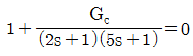
와 같이 주어지는 시스템에서 제어기 GC로 비례제어기를 이용할 경우 진동응답이 예상되는 경우는? (단, KC는 제어기의 비례이득이다.)- KC=0
- KC=1
- KC=-1
- KC에 관계없이 진동이 발생된다.
(정답률: 48%)
50. 개루프 전달함수가
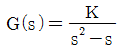
일 때 negative feedback 폐루프 전달함수를 구한 것은?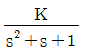
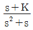
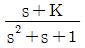
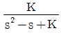
(정답률: 58%)
51. s3+4s2+2s+6=0로 특성방정식이 주어지는 계의 Routh 판별을 수행할 때 다음 배열의 (a), (b)에 들어갈 숫자는?
- a = 1/2, b = 3
- a = 1/2, b = 6
- a = -1/2, b = 3
- a = -1/2, b = 6
(정답률: 64%)
52. 시간지연이 θ이고 시상수가 τ인 시간지연을 가진 1차계의 전달함수는?
(정답률: 64%)
53. 어떤 액위저장 탱크로부터 펌프를 이용하여 일정한 유량으로 액체를 뽑아내고 있다. 이 탱크로는 지속적으로 일정량의 액체가 유입되고 있다. 탱크로 유입되는 액체의 유량이 기울기가 1인 1차 선형변화를 보인 경우 정상 상태로부터의 액위의 변화 H(t)를 옳게 나타낸 것은?(단, 탱크의 단면적은 A 이다.)
(정답률: 39%)
54. 모델식이 다음과 같은 공정의 Laplace 전달함수로 옳은 것은?(단, y는 출력변수, x는 입력변수이며 Y(s)와 X(s)는 각각 y와 x의 Laplace 변환이다.)
(정답률: 63%)
55. 다음 공정에 단위 계단입력이 가해졌을 때 최종치는?
- 0
- 1
- 2
- 3
(정답률: 67%)
56. Feedback 제어에 대한 설명 중 옳지 않은 것은?
- 중요변수(CV)를 측정하여 이를 설정값(SP)과 비교하여 제어동작을 계산한다.
- 외란(DV)을 측정할 수 없어도 feedback 제어를 할 수 있다.
- PID 제어기는 feedback 제어기의 일종이다.
- Feedback 제어는 Feedforward 제어에 비해 성능이 이론적으로 항상 우수하다.
(정답률: 58%)
57. 단위계단 입력에 대한 응답 ys(t)를 얻었다. 이것으로부터 크기가 1 이고 폭이 a 인 펄스 입력에 대한 응답 yp(t)는?
- yp(t) = ys(t)
- yp(t) = ys(t-a)
- yp(t) = ys(t) - ys(t-a)
- yp(t) = ys(t) + ys(t-a)
(정답률: 45%)
58. 입력과 출력사이의 전달함수의 정의로서 가장 적절한 것은?
- 출력의 라플라스 변환 / 입력의 라플라스 변환
- 출력 / 입력
- 편차형태로 나타낸 출력의 라플라스 변환 / 편차형태로 나타낸 입력의 라플라스 변환
- 시간함수의 출력 / 시간함수의 입력
(정답률: 57%)
59. 다음 그림은 외란의 단위계단 변화에 대해 여러 형태의 제어기에 의해 얻어진 공정출력이다. 이 때 A는 무엇을 나타내는가?
- phase lag
- phase lead
- gain
- offset
(정답률: 46%)
60. 여름철 사용되는 일반적인 에어컨(air conditioner)의 동작에 대한 설명 중 틀린 것은?
- 온도 조절을 위한 피드백 제어 기능이 있다.
- 희망온도가 피드백 제어의 설정값에 해당된다.
- 냉각을 위하여 에어컨으로 흡입되는 공기의 온도변화가 외란에 해당된다.
- On/Off 제어가 주로 사용된다.
(정답률: 52%)
4과목: 공업화학
61. 황산의 원료인 아황산가스를 황화철광(iron pynte)을 공기로 완전 연소하여 얻고자 한다. 황화철광의 10%가 불순물이라 할 때 황화철광 1톤을 완전연소 하는데 필요한 이론 공기량은 표준상태 기준으로 약 몇 m3 인가?(단, Fe 의 원자량은 56 이다.)
- 460
- 580
- 2200
- 2480
(정답률: 36%)
62. 접촉식 황산 제조법에서 주로 사용되는 촉매는?
- Fe
- V2O5
- KOH
- Cr2O3
(정답률: 72%)
63. HNO3 14.5%, H2SO4 50.5%, HNOSO4 12.5%, H2O 20.0%, nitrobody 2.5% 의 조성을 가지는 혼산을 사용하여 toluene 으로부터 mononitrotoluene 을 제조하려고 한다. 이 때 1700kg 의 toluene 을 12000kg 의 혼산으로 니트로화했다면 DVS(dehydrating value of sulfuric acid)는?
- 1.87
- 2.21
- 3.04
- 3.52
(정답률: 42%)
64. 합성염산을 제조할 때는 폭발의 위험이 있으므로 주의 해야 한다. 염산 합성시 폭발을 방지하는 방법에 대한 설명으로 가장 거리가 먼 것은?
- 불활성 가스를 주입하여 조업온도를 낮춘다.
- H2를 과잉으로 주입하여 Cl2가 미반응 상태로 남지 않도록 한다.
- 반응완화 촉매를 주입한다.
- HCl 생성속도를 빠르게 한다.
(정답률: 60%)
65. 벤젠으로부터 아닐린을 합성하는 단계를 순서대로 옳게 나타낸 것은?
- 수소화, 니트로화
- 암모니아화, 아민화
- 니트로화, 수소화
- 아민화, 암모니아화
(정답률: 62%)
66. 공기 중에서 프로필렌을 산화시켜서 알코올과 작용시켰을 때 얻는 주생성물은?
- CH3 - R - COOH
- CH3 - CH2 - COOR
- CH2 = R - COOH
- CH2 = CH - COOR
(정답률: 40%)
67. 반도체 제조과정 중에서 식각공정 후 행해지는 세정공정에 사용되는 piranha 용액의 주 원료에 해당하는 것은?
- 질산, 암모니아
- 불산, 염화나트륨
- 에탄올, 벤젠
- 황산, 과산화수소
(정답률: 44%)
68. 다음 중 가스용어 LNG 의미에 해당하는 것은?
- 액화석유가스
- 액화천연가스
- 고화천연가스
- 액화프로판가스
(정답률: 76%)
69. 석회질소 비료에 대한 설명 중 틀린 것은?
- 토양의 살균효과가 있다.
- 과린산석회, 암모늄염 등과의 배합비료로 적당하다.
- 저장 중 이산화탄소, 물을 흡수하여 부피가 증가한다.
- 분해시 생성되는 디시안디아미드는 식물에 유해하다.
(정답률: 46%)
70. 소다회 제조법 중 거의 100% 의 식염의 이용이 가능한 것은?
- solvay 법
- Le Blanc 법
- 염안소다법
- 가성화법
(정답률: 61%)
71. 산성토양이 된 곳에 알칼리성 비료를 사용하고자 할 때 다음 중 가장 적합한 비료는?
- 과린산석회
- 염안
- 석회질소
- 요소
(정답률: 53%)
72. 염화수소 가스를 물 50kg 에 용해시켜 20% 의 염산용액을 만들려고 한다. 이 때 필요한 염화수소는 약 몇 kg 인가?
- 12.5
- 13.0
- 13.5
- 14.0
(정답률: 53%)
73. 다음 중 1차 전지가 아닌 것은?
- 산화은전지
- Ni-MH전지
- 망간전지
- 수은전지
(정답률: 67%)
74. Fischer-Tropsch 반응을 옳게 표현한 것은?
- nCO + (2n+1)H2 → CnH2n+2+nH2O
- CnH2n+2+H2O → CH4 + CO2
- CH3OH+H2 → HCHO + H2O
- CO2 + H2 → CO + H2O
(정답률: 50%)
75. 석유의 접촉개질(catalytic reforming)에 대한 설명으로 옳지 않은 것은?
- 수소화 분해나 이성화를 최대한 억제한다.
- 가솔린 유분의 옥탄가를 높이기 위한 것이다.
- 온도, 압력 등은 중요한 운전조건이다.
- 방향족화(aromatization)가 일어난다.
(정답률: 48%)
76. 다음 고분자 중 Tg(glass transition temperature)가 가장 높은 것은?
- Polycarbonate
- Polystyrene
- Poly vinyl chloride
- Polyisoprene
(정답률: 62%)
77. Acetylene 을 주원료로 하여 수은염을 촉매로 물과 반응시키면 얻어지는 것은?
- methanol
- stylene
- acetaldehyde
- acetophenone
(정답률: 65%)
78. 다음 중 고분자의 일반적인 물리적 성질에 관련된 설명으로 가장 거리가 먼 것은?
- 중량평균분자량에 비해 수평균분자량이 크다.
- 분자량의 범위가 넓다.
- 녹는점이 뚜렷하지 않아 분리정제가 용이하지 않다.
- 녹슬지 않고, 잘 깨지지 않는다.
(정답률: 60%)
79. 선형 저밀도 폴리에틸렌에 관한 설명이 아닌 것은?
- 촉매 없이 1-옥텐을 첨가하여 라디칼 중합법으로 제조한다.
- 규칙적인 가지를 포함하고 있다.
- 낮은 밀도에서 높은 강도를 갖는 장점이 있다.
- 저밀도 폴리에틸렌보다 강한 인장강도를 갖는다.
(정답률: 43%)
80. 다음 중 소다회 제조법으로써 암모니아를 회수하는 것은?
- 르블랑법
- 솔베이법
- 수은법
- 격막법
(정답률: 63%)
5과목: 반응공학
81. 회분식 반응기에서 A 의 분해 반응을 50℃ 등온하에서 진행시켜 얻는 CA와 반응시간 t 간의 그래프로부터 각 농도에서의 곡선에 대한 접선의 기울기를 다음과 같이 얻었다. 이 반응의 반응 속도식은?
(정답률: 53%)
82. 매 3분마다 분마다 반응기 체적의 1/2에 해당하는 반응물이 반응기에 주입되는 연속흐름반응 기(steady -state flow reactor)가 있다. 이때의 공 간시간 (τ : space time) 과 공간속도 (S : space velocity)는 얼마인가 얼마인가?
- τ = 6 분, S = 1분^( -1)
- τ = 1/3, S = 3분^( -1)
- τ = 6 분, S = 1/6 분^( -1)
- τ = 2 분, S = 1/2 분^( -1)
(정답률: 65%)
83. 650℃ 에서의 에탄의 열분해 반응은 500℃에서보다 2790배 빨라진다. 이 분해 반응의 활성화 에너지는?
- 75,000cal/mol
- 34,100cal/mol
- 15,000cal/mol
- 5,600cal/mol
(정답률: 59%)
84. 다음 중 불균일 촉매반응에서 일어나는 속도결정단계 (rate determining step)와 거리가 먼 것은?
- 표면반응단계
- 흡착단계
- 탈착단계
- 촉매불활성화단계
(정답률: 62%)
85. 다음의 액상반응에서 R이 요구하는 물질 일 때에 대한 설명으로 설명으로 가장 거리가 먼 것은?
- A 에 B를 조금씩 넣는다.
- B 에 A를 조금씩 넣는다.
- A 와 B를 빨리 혼합한다.
- A의 농도가 균일하면 B의 농도는 관계없다.
(정답률: 45%)
86. 2차 액상 반응, 2A → products이 혼합흐름반응기에서 60%의 전화율로 진행된다. 다 른 조건은 그대로 두고 반응기의 크기만 두 배로 했을 경우 전화율은 얼마로 되는가?
- 66.7%
- 69.5%
- 75.0%
- 91.0%
(정답률: 45%)
87. 자동촉매반응 (autocatalytic reaction)에 대한 설명으로 옳은 것은?
- 전화율이 작을 때는 관형흐름 반응기가 유리하다.
- 전화율이 작을 때는 혼합흐름 반응기가 유리하다.
- 전화율과 무관하게 혼합흐름 반응기가 항상 유리하다.
- 전화율과 무관하게 관형흐름 반응기가 항상 유리하다.
(정답률: 56%)
88. CSTR 에 대한 설명으로 옳지 않은 것은?
- 비교적 온도 조절이 용이하다.
- 약한 교반이 요구될 때 사용된다.
- 높은 전화율을 얻기 위해서는 큰 반응기가 필요하다.
- 반응기 부피당 반응물의 전화율은 흐름 반응기들 중에서 가장 작다.
(정답률: 56%)
89. 회분식 반응기 (batch reactor)에서 균일계 비가역 1차 직렬 반응  이 일어날 때 R 농도의 최대값은 얼마인가?(단, k1=1.5min-1, k2=3min-1이고 , 각 물질의 초기농도 이다.)
이 일어날 때 R 농도의 최대값은 얼마인가?(단, k1=1.5min-1, k2=3min-1이고 , 각 물질의 초기농도 이다.)
- 1.25mol/L
- 1.67mol/L
- 2.5mol/L
- 5.0mol/L
(정답률: 32%)
90. 다음과 같은 연속 (직렬) 반응에서 A 와 R 의 반응속도가 일 때, 회 분식 반응기에서 를 구하면?(단, 반응은 반응은 순수한 A 만으로 만으로 시작한다 시작한다.)
(정답률: 35%)
91. A 가 분해되는 정용 회분식 회분식 반응기에서 CAO=4mol/L 이고, 8분 후의 A 의 농도 CA를 측정한 결과 2mol/L 이었다. 속도상수 k 는 얼마인가?(단, 속도식은 이다.
- 0.15min-1
- 0.18min-1
- 0.21min-1
- 0.34min-1
(정답률: 43%)
92. 및 인 두 액상 반응이 동시에 등온 회분반응기에서 진행된다. 50분 후 A 의 90%가 분해되어 생성물 비는 9.1mol R/1mol S이다. 반응차수는 각각 1차일 때, 반응 속도상수 k2는 몇 min-1인가?
- 2.4 × 10^(-6)
- 2.4 × 10^(-5)
- 2.4 × 10^(-4)
- 2.4 × 10^(-3)
(정답률: 48%)
93. 비가역 1차 액상반응 액상반응 A → R 이 플러그 흐름반응기에서 전화율이 50%로 반응된다. 동일조건에서 반응기의 크기만 2배로 하면 전화율은 몇 % 가 되는가?
- 67
- 70
- 75
- 100
(정답률: 58%)
94. 1개의 혼합 흐름 반응기에 크기가 2배되는 반응기를 추가로 직렬로 연결하여 A 물질을 액상분해 반응시켰다. 정상상태에서 원료의 농도가 1mol/L 이고 , 제1반응기의 평균공간시간 평균공간시간이 96 초이었으며 배출농도가 0.5mol/L이었다. 제2반응기의 배출농도가 배출농도가 0.25mol/L 일 경우 반응속도식은 반응속도식은?
(정답률: 43%)
95. 회분식 반응기에서 아세트산에틸을 가수분해시키면 1차 반응속도식에 따른다고 한다. 만 일 어떤 실험조건에서 아세트산에틸을 정확히 30% 분해시키는데 40 분이 소요되었을 경우에 반감기는 몇 분인가?
- 58
- 68
- 78
- 88
(정답률: 60%)
96. 혼합 흐름 반응기에서 반응 속도식이 -rA=kC2A인 반응에 대해 50% 전화율을 얻었다. 모든 조건을 동일하게 하고 반응기의 부피만 5배로 했을 경우 전화율은?
- 0.6
- 0.73
- 0.8
- 0.93
(정답률: 53%)
97. 반응속도상수에 영향을 미치는 변수가 아닌 것은?
- 반응물의 몰수
- 반응계의 온도
- 반응활성화 에너지
- 반응에 첨가된 촉매
(정답률: 45%)
98. 다음과 같은 반응에서 최초 혼합물인 반응 물 A가 25%, B가 25% 인 것에 불활성기체가 50% 혼합되었다고 한다. 반응이 완결되었을 때 용적변화율 εA는 얼마인가?
- -0.125
- -0.25
- 0.5
- 0.875
(정답률: 54%)
99. 다음 반응에서 R의 순간 수율 (생성된 R의 몰수 /반응한 A의 몰수) 은?
(정답률: 66%)
100. 일반적으로 A → P 와 같은 반응에서 반응물의 농도가 C=1.0×10mol/L일 때 그 반응 속도가 0.020mol/L·s 이고 반응속도상수가 k=2×10^(-4)L/mol·s 이라고 한다면 이 반응의 차 수는?
- 1차
- 2차
- 3차
- 4차
(정답률: 64%)
압축인자는 기체 분자 간의 상호작용을 나타내는 상수이며, 기체의 실제 동작을 설명하는 데 사용됩니다. 이 값은 일반적으로 1보다 작거나 같습니다. 이는 기체 분자 간의 상호작용이 이상적인 기체와는 다르기 때문입니다.
혼합가스의 2차 비리얼 계수는 온도와 조성의 함수이며, 이 값은 혼합물의 실제 동작을 설명하는 데 사용됩니다. 압력이 영에 접근하면 잔류 엔탈피나 엔트로피가 영으로 접근하는 것은 기체의 이상성을 나타내는 현상입니다.
조성이 주어지면 혼합물의 임계치는 일정하지 않습니다. 임계치는 각 구성 성분의 임계치와 상호작용에 따라 달라집니다.